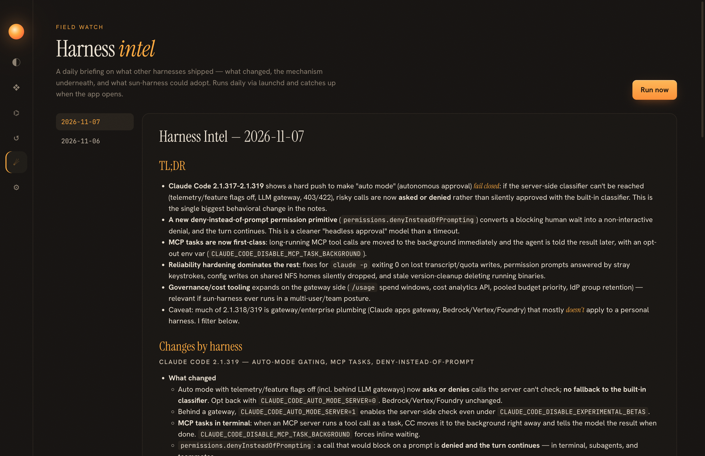
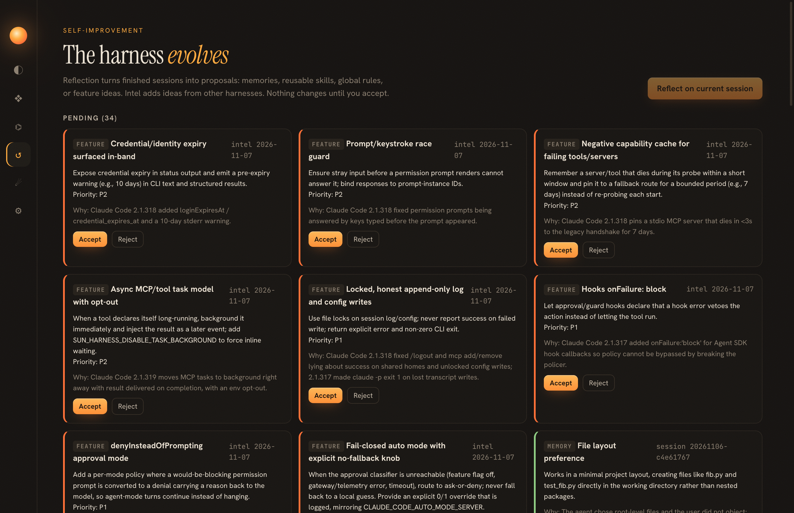

Milestone M4 · specs 005-intel, 006-evolution
05 · Intel & evolution
A personal harness should grow with the field and with its owner. Intel watches the field every day; evolution turns what the harness learns into changes you approve.
The intel pipeline
GitHub releases · CHANGELOG.md · pages] --> F[Fetch in parallel
per-source errors are not fatal] F --> D{New since
state.json?} D -->|no| N[“No news” report] D -->|yes| RAW[(raw/date.json)] RAW --> A[LLM analysis
What changed · Mechanism · Why it matters · Trends · Ideas] A -->|ok| R[reports/date.md + .html] A -->|quota / error| PEND[report with raw items
“Analysis pending”] PEND -. sun intel analyze date .-> A R --> I[Top 8 ideas → feature proposals]
Why ask for the "mechanism / principle" of each change?
A changelog says what changed. To learn from another harness you need why it works. The first live report did this well: it explained Codex's session-picker fixes as "a session-first index with the provider as an attribute", and Hermes v0.23 as "one gateway process owns every session; every surface attaches as a client". Those are transferable ideas, not just version notes.

Scheduling: three failures before it worked
(to load API keys from ~/.zshrc)"] -->|hung| C1["conda shell hook in .zshrc
blocks without a terminal"] C1 --> A2["Attempt 2: run node directly,
parse export lines from rc files"] A2 -->|hung, no output, no sockets| C2["macOS TCC: launchd jobs cannot read
~/Downloads without a permission prompt"] C2 --> A3["Attempt 3: self-contained esbuild bundle
copied to ~/.sun/bin/sun.mjs"] A3 -->|works| OK["14 sources · 0 errors · analyzed · 8 proposals"]
How was the TCC problem diagnosed? Nothing was logged.
The process list showed node alive with no CPU use, lsof showed no network sockets and an empty log, and the code was located under ~/Downloads, a protected folder. A background job touching a protected folder waits for a consent prompt that never appears. Moving the code to ~/.sun/bin confirmed it: the next launchd run finished in about 30 seconds.
Why parse rc files instead of running a login shell?
Running an interactive rc file means running whatever is in it (conda, nvm, prompts), and any of it can hang. sun-harness reads only lines of the form export NAME=value where NAME looks like a credential (_API_KEY, _BASE_URL, _TOKEN, …). It skips anything that needs evaluation and never copies secrets into the plist.
Smaller fixes from the first live run
| Problem | Fix |
|---|---|
Claude Code changelog: fetch failed | read through the GitHub contents API; raw.githubusercontent.com is only a fallback |
| Report dated yesterday at 03:00 local time | toISOString() is UTC; user-facing dates now use the local calendar (localDate()) |
| 20 proposals from one report | sort by priority, keep the top 8, strip the JSON block from the human report |
Evolution: proposals, never silent changes
+ memory + known proposals + injected-rules note] INT[Daily intel] --> PROP REF --> PROP[(Proposals
pending)] PROP -->|accept memory| MEM[MEMORY.md] PROP -->|accept skill| SK[~/.sun/skills/name/SKILL.md] PROP -->|accept rule| RU[~/.sun/AGENTS.md] PROP -->|accept feature| BL[backlog.md → spec → code] MEM & SK & RU & BL --> J[journal.md]
The first reflection claimed the agent "never read AGENTS.md". Was that true?
No. The rules were injected into the system prompt, which the reflector could not see, and it also flagged "truncated tool arguments" that the transcript builder had truncated itself. Fix: the transcript now starts with a context line listing the rules that were injected and noting that it is abridged. Both false findings disappeared. Known proposal titles are also passed in, so reflection does not re-propose pending items.

A reflector judges only what it can see. Give it the same context the agent had, and tell it what you removed.